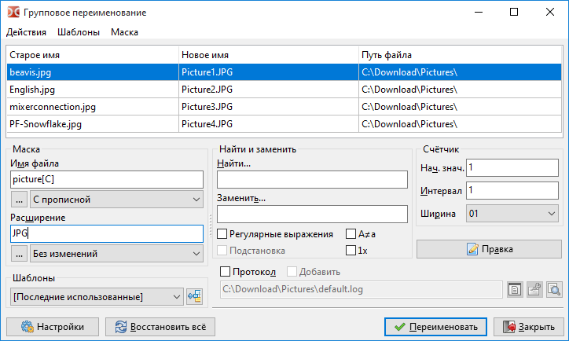
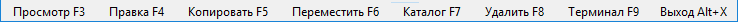

Добро пожаловать в Double Commander!
Double Commander — продукт отечественного программиста Александра Коблова (Alexx2000@mail.ru), основанный на Sexi Commander (автор — Radek Cervinka, radek.cervinka@centrum.cz).
На странице загрузки Sourceforge вы можете видеть несколько версий DC, доступных для загрузки.
Сначала вы должны определиться с операционной системой (Windows, Linux, Mac, FreeBSD), разрядностью 32 или 64 бит, а затем можете выбрать версию для загрузки.
Для Windows доступны инсталляторы (*.exe и *.msi, Inno Setup и MSI соответственно) и архив ZIP с портативной версией.
Для Linux существуют версии для самых популярных дистрибутивов и сред рабочего стола.
Вы можете загрузить скомпилированные пакеты deb для дистрибутивов на основе Debian (например, Ubuntu) и/или rpm для систем, использующих менеджер пакетов RPM (openSUSE, Fedora, CentOS, ALT Linux, Rosa и другие).
Также доступны портативная версия (в архиве tar.xz) и исходный код Double Commander (в архиве tar.gz), если вы хотите собрать DC самостоятельно.
Существуют версии для разных сред рабочего стола: с использованием библиотек GTK+ или Qt.
При первом запуске Double Commander автоматически определит системный язык и установит его для интерфейса. DC переведён на многие языки. Язык можно изменить в Настройки > Параметры... > Язык.
Также Double Commander определяет и использует текущую системную тему. Выглядит это так (Ubuntu, две темы и два набора значков):

На изображении видны левая файловая панель, командная строка и ниже окно протокола (оно показывает все действия файлового менеджера).
Версия Double Commander для платформы Windows совместима со многими плагинами Total Commander (TC), версии для остальных платформ не имеют такой совместимости, но в полной мере поддерживают интерфейс плагинов.
DC поставляется с предустановленными архиваторными (WCX) плагинами для работы с архивами CPIO, DEB, RPM, BZ2, RAR, ZIP, TAR, GZ, TGZ как с каталогами (виртуальная файловая система, VFS), WFX-плагином для доступа к FTP, несколькими информационными плагинами (WDX); в Linux-версии добавлены плагин поиска (DSX), WFX-плагин для доступа к сетевым дискам (SMB/CIFS) и WLX-плагин для видео. Другие плагины могут быть установлены вручную.
Интерфейс Double Commander.

Главное меню позволяет получить доступ ко всем возможностям Double Commander. Но не забывайте, что большинство действий можно выполнить и другими способами: при помощи горячих клавиш или кнопок на панели инструментов.
В этом меню собраны практически все операции, которые можно производить над файлами. Рассмотрим по порядку:
Создать жёсткую ссылку (команда cm_HardLink). Если выбрать этот пункт, то Double Commander создаст жёсткую ссылку на файл под курсором в папке, открытой в противоположной панели.

Имя ссылки — здесь указывается путь ссылки и её имя. Именем будет последнее слово после последнего слеша в строке.
На что указывает — объект, на который создаётся ссылка.
Создать символьную ссылку (команда cm_SymLink). Всё аналогично предыдущему пункту, только ссылка будет символьная.
Создать каталог (команда cm_MakeDir) — создаёт новый подкаталог в текущем каталоге, будет предложено имя файла под курсором.
Создать ярлык (только Windows) — Double Commander создаст ярлык Microsoft Windows (LNK-файл) на файл под курсором в папке, открытой в противоположной панели.
Изменить атрибуты... (команда cm_SetFileProperties) — позволяет изменять метки времени и атрибуты (Windows) или права файла (Linux и другие Unix-подобные системы), рекурсивно или нет.
Свойства файла... (команда cm_FileProperties) покажет системный диалог "Свойства" (Windows) или собственное диалоговое окно Double Commander (Linux и другие Unix-подобные системы):


в котором указано имя файла или папки, расположение, размер, время модификации и последнего доступа, а также владелец и группа. На вкладке "Атрибуты" можно изменить уровень доступа к файлу (если у вас есть на это права). Вкладка "Плагины" опциональна и доступна только если есть подходящий информационный плагин (в данном случае это deb.wdx).
Воспользовавшись пунктом Редактировать комментарий (команда cm_EditComment) вы можете создавать или изменять комментарии к файлам, которые хранятся в файле descript.ion. Поддерживаются кодировки UTF, ISO, KOI и ANSI.
Комментарии работают только с обычными файлами в локальной файловой системе, но не с удалёнными или виртуальными файловыми системами (например, на FTP-сервере, в архиве и тому подобное).
Подсчитать занимаемое место (команда cm_CalculateSpace) рассчитывает размер выделенных папок и файлов в удобных для восприятия округлённых единицах и в байтах.

Сравнить по содержимому (команда cm_CompareContents) вызывает окно с двумя панелями, в которых открываются файлы для сравнения (обычно текстовые).

Это простой инструмент для визуального сравнения и объединения с типичными функциями: перемещение между различиями (следующее, предыдущее, первое или последнее), копирование блоков текста справа налево и слева направо, редактирование файлов на месте, отмена и повтор последних изменений, сохранение под другим именем и другое.
Настройки:
Сравнить автоматически — Автоматическое сравнение при изменении параметров Не учитывать пробелы и Не учитывать регистр. А также при выборе нового файла.
Не учитывать пробелы — Если отмечено, несколько пробелов будут считаться одним.
Не учитывать регистр — Если отмечено, прописные и строчные буквы не будут различаться.
Разница строк — Если отмечено, также будут показаны различия внутри строк.
Бинарный режим — Сравнение файлов в двоичном виде.
Синхронная прокрутка — Позволяет просматривать файлы с одновременной синхронной прокруткой (вертикальная и горизонтальная).
Также смотрите описание параметров <Added>, <Deleted> и <Modified> здесь.
Два файла будут выбраны следующим образом:
Если в активной панели выделено два файла, они будут открыты в инструменте сравнения.
Если выделен только один файл, он будет сравниваться с выделенным файлом в неактивной панели.
Если выделен только один файл, а в неактивной панели ничего не выделено, он будет сравниваться с одноимённым файлом во второй панели (если существует) или с файлом под курсором.
Если ничего не выделено, файл под курсором будет сравниваться с одноимённым файлом в другой панели (если существует) или с файлом под курсором.
Инструмент группового переименования (команда cm_MultiRename)

Позволяет переименовывать группу файлов по определённой маске. Например, несколько файлов с разными именами в файлы с именами Picture1, Picture2, Picture3 и т.д. Выделяем файлы, которые необходимо переименовать, запускаем этот инструмент (см. изображение выше). В главном поле видим старые и новые имена наших файлов.
Подробное описание смотрите на этой странице.
Выбрав пункт Упаковать (команда cm_PackFiles) мы вызовем стандартный диалог упаковки файлов в архивы ZIP, TAR и другие: список поддерживаемых форматов зависит от добавленных архиваторных плагинов и внешних архиваторов.

Обратное действие можно выполнить, воспользовавшись пунктом Распаковать (команда cm_ExtractFiles). Этот же диалог вызывается при копировании файлов из архива, если вы вошли в него как в каталог.

В поле Распаковать файлы по маске можно указать маску, определяющую, какие файлы будут распакованы. История масок доступна в выпадающем списке. В следующей строке указывается каталог назначения (то есть куда будет распакован архив). Его можно сменить вручную или нажав на кнопку обзора справа.
Флажок Распаковать каждый архив в отдельный каталог (с именем архива) создаёт в каталоге назначения папку с именем архива и извлекает файлы в эту папку. С помощью этой опции вы можете распаковать сразу несколько архивов и каждый будет распакован в свою папку в каталоге назначения. По умолчанию не отмечено и не сохраняется для следующего вызова команды извлечения.
Учитывать подкаталоги — Если отмечено, структура каталогов в архиве будет сохранена. В противном случае все файлы будут извлечены без воссоздания структуры каталогов.
Флажок Заменять существующие файлы запрещает подтверждение перезаписи файлов.
Протестировать архив(ы) (команда cm_TestArchive) проверит целостность содержимого выделенных файлов архивов или файла под курсором. Если архив повреждён, то будет показано сообщение об ошибке. Список поддерживаемых форматов зависит от добавленных архиваторных плагинов и внешних архиваторов.
Пункты Разрезать файл и Собрать файлы (команды соответственно cm_FileSpliter и cm_FileLinker)

Разбить файл в каталог — указывает, в какую папку будут помещены части файла после его разрезания.
Размер частей файла — указывается размер частей, на которые будет разрезан файл. Можно ввести как своё значение, так и воспользоваться предустановленными:
1457664 B - 3.5" — размер для дискет формата 3.5;
98078 KB - ZIP 100 MB — размер для дискет формата ZIP;
650 MB - CD 650 MB — размер для CD-диска;
700 MB - CD 700 MB — размер для CD-диска;
4482 MB - DVD+R — размер для DVD-диска.
После нажатия на кнопку OK, в каталоге назначения получаете части этого файла нужного размера с расширением ".split". Чтобы собрать файл, выделяете все части файла с расширением ".split" и выбираете Собрать файлы (cm_FileLinker). Указываете из каких частей и в каком порядке необходимо производить сборку.

Функция полезна, если файл очень большой, а носитель маленький, это делает возможным перенести файл по частям.
Пункт Посчитать контрольные суммы... (команда cm_CheckSumCalc) используется для подсчёта контрольных сумм файлов с целью проверки их целостности. Доступны следующие алгоритмы: BLAKE2 (BLAKE2s, BLAKE2sp, BLAKE2b, BLAKE2bp), BLAKE3, CRC32, HAVAL, MD4, MD5, RIPEMD128, RIPEMD160, SFV, SHA, SHA2 (размер хеша 224, 256, 384 или 512 байт), SHA3 (размер хеша 224, 256, 384 или 512 байт), Tiger/192.
Сохранить файл(ы) контрольных сумм как: — строка указывает, где и под каким именем будет сохранён файл, содержащий контрольную сумму.
Для каждого файла создать отдельный файл контрольной суммы — если сумма считается для нескольких выделенных файлов, то для каждого будет создан отдельный файл с контрольной суммой, иначе будет создан один общий, с контрольными суммами всех выделенных файлов.
Список доступных алгоритмов — выбор алгоритма, по которому будут подсчитаны контрольные суммы файлов.
Пункт Проверить контрольные суммы... (команда cm_CheckSumVerify) начнёт проверку списка контрольных сумм из файла контрольной суммы под курсором. Также вы можете запустить эту команду, дважды щёлкнув мышью по файлу контрольной суммы (или с помощью клавиши Enter).
Double Commander может проверять файлы по одному: выберите файл, запустите эту команду, теперь введите его контрольную сумму (или вставьте из буфера обмена) и выберите алгоритм.
Вы можете использовать файлы контрольной суммы, созданные другими программами, но сначала убедитесь, что Double Commander поддерживает их алгоритм и формат.
Пункт Стереть (Wipe) (команда cm_Wipe) для безопасного удаления (Alt+Del по умолчанию): перед удалением с жёсткого диска файл будет переименован со случайным именем и его содержимое будет перезаписано нулями, единицами или случайными данными. Вы можете установить количество проходов перезаписи в Настройки > Параметры... > Файловые операции. Каталоги и ссылки перед удалением будут просто переименованы.
Пункт Удалить (команда cm_Delete) — удалит выбранные файлы или файл под курсором в корзину или навсегда. По умолчанию программа перемещает файлы в корзину, вы можете изменить это в Настройки > Параметры... > Файловые операции. Удаление в корзину может быть доступно не для всех платформ.
Чтобы удалить файлы внутри архива (в этом случае файлы будут удалены сразу), вам необходимо добавить подходящий WCX-плагин или настроить внешний архиватор, также формат архива должен поддерживать операцию удаления.
Пункт Выход (команда cm_Exit) — закрывает Double Commander.
Здесь собраны команды, при помощи которых можно выделить группу файлов, а также производить разные действия с выделением.
Первый и второй пункты Выделить группу и Снять выделение с группы (команды cm_MarkPlus и cm_MarkMinus). Эти команды выделяют группы файлов по маске. В маске можно указать часть имён файлов или расширения.

Например, выделить в каталоге все файлы с расширением txt. Кнопка со стрелкой вниз в конце строки открывает список истории масок.
Третий и четвёртый пункты Выделить все (команда cm_MarkMarkAll) и Снять выделение со всех (команда cm_MarkUnmarkAll). С их помощью можно выделить все файлы и папки в каталоге активной панели или снять это выделение.
Пятый пункт — Инвертировать выделение (команда cm_MarkInvert). Со всех выделенных файлов и папок в текущем каталоге выделение будет снято, а все неотмеченные наоборот, будут выделены.
Шестой и седьмой пункты Выделить файлы по расширению (команда cm_MarkCurrentExtension) и Снять выделение по расширению (команда cm_UnmarkCurrentExtension). С помощью этих команд можно выделить или снять выделение со всех файлов с тем же расширением, что и у файла под курсором.
Восьмой и девятый пункты Сохранить выделение (команда cm_SaveSelection) и Восстановить выделение (команда cm_RestoreSelection). Первая команда сохранит список выделенных файлов/папок во внутреннем буфере, позже с помощью второй команды можно восстановить выделение.
Десятый и одиннадцатый пункты Сохранить выделение в файл (команда cm_SaveSelectionToFile) и Загрузить выделение из файла (команда cm_LoadSelectionFromFile). Как предыдущие команды, но с использованием обычного текстового файла (одно имя файла на строку).
Двенадцатый пункт — Загрузить выделение из буфера (команда cm_LoadSelectionFromClip). Выделит файлы и папки по списку из буфера обмена (одно имя файла на строку).
Тринадцатый и четырнадцатый пункты Копировать имена файлов в буфер (команда cm_CopyNamesToClip) и Копировать полные имена файлов (команда cm_CopyFullNamesToClip). Первая команда копирует список имён всех выделенных файлов в буфер обмена, вторая команда копирует в буфер обмена полные (путь + имя) имена выделенных файлов.
Пятнадцатый пункт — Копировать содержимое всех колонок (команда cm_CopyFileDetailsToClip). Скопирует в буфер обмена содержимое всех колонок выделенных файлов/папок: один файл на строку, содержимое колонок будет разделено символом табуляции.
Последний пункт — Сравнить каталоги (команда cm_CompareDirectories). Выделит в обеих, активной и неактивной, панелях те элементы, которые отсутствуют в противоположной панели (по умолчанию будут выделены только файлы).
Первым пунктом идёт Поиск (команда cm_Search). Этот инструмент предназначен для поиска файлов и папок по указанным критериям. Также можно использовать для поиска по содержимому файла. Подробное описание смотрите на этой странице.
Новый экземпляр поиска... (команда cm_AddNewSearch) — открывает новый экземпляр окна поиска с настройками по умолчанию. Команда позволяет запустить новый экземпляр для поиска чего-то ещё, пока выполняется долгий поиск.
Список запущенных окон поиска (команда cm_ViewSearches) — покажет окно со списком экземпляров поиска с краткой информацией (статус, количество найденных файлов, если завершено, и маска файла), с возможностью переключиться на одно из них.
Четвёртый пункт Избранные каталоги (команда cm_DirHotList). Эта команда аналогична нажатию на кнопку "*".
При выборе этого пункта получаем выпадающее меню с избранными каталогами, из которого можно выбрать:
переключить текущий путь активной вкладки на предварительно сохранённый каталог из списка;
добавить новую закладку: текущий каталог, выделенный каталог (более одного, если нужно) или каталог под курсором;
настроить уже существующие закладки.
Подробнее ознакомиться с настройкой и использованием можно на странице справки Избранные каталоги.
Синхронизировать каталоги... (команда cm_SyncDirs) открывает инструмент синхронизации каталогов: каталоги левой и правой панелей будут просканированы, вы увидите различия в их содержимом и сможете сделать их одинаковыми.
Пуск терминала (команда cm_RunTerm) открывает терминал в текущем каталоге (настройки терминала задаются в разделе Инструменты).
Выполнить внутреннюю команду (команда cm_DoAnyCmCommand) открывает окно со списком всех внутренних команд и их описанием. Команды сгруппированы по категориям, доступны быстрый фильтр и сортировка: вы можете выполнить выбранную команду, скопировать её название или открыть страницу Внутренние команды (некоторые команды поддерживают параметры).
Показать все файлы без подкаталогов (команда cm_FlatView) просканирует все каталоги панели и покажет всё содержимое.
Открыть список VFS (команда cm_OpenVirtualFileSystemList) откроет список добавленных плагинов файловой системы (WFX-плагинов), использующих собственные файловые системы или предоставляющие доступ к другим файловым системам и устройствам (локальным или удалённым).
Поменять панели местами (команда cm_Exchange) меняет местами левую и правую файловые панели со всеми открытыми вкладками.
Получатель = Источнику (команда cm_TargetEqualSource) откроет в неактивной файловой панели тот же каталог, который открыт в активной.
Показать размеры всех папок подсчитывает и показывает общий размер всех файлов в подкаталогах текущего. В активной панели текст <Папка> в колонке Размер будет заменён на общий размер.
Соединиться с сервером — откроет список добавленных плагинов файловой системы (WFX-плагинов), как команда Открыть список VFS в меню "Команды".
Разорвать соединение — закроет активное сетевое соединение.
Следующие пункты только для Windows.
Подключить сетевой диск и Отключить сетевой диск — вызывают системные диалоги Windows для подключения и отключения сетевых дисков.
Копировать в буфер имена с UNC-путём — скопирует в буфер обмена полное имя файла в сети: имя сервера, имя совместно используемого ресурса и относительный путь файла.
Как видно по названию, предназначено для управления вкладками файловых панелей.
Новая вкладка (команда cm_NewTab) — добавляет новую вкладку на активной панели (с текущим путём) и переключает на неё.
Переименовать вкладку (команда cm_RenameTab) — позволяет изменить заголовок текущей вкладки.
Открыть папку в новой вкладке (команда cm_OpenDirInNewTab) — открывает папку под курсором в новой вкладке, но не переключает на неё (т.е. в фоне).
Закрыть вкладку (команда cm_CloseTab) — закрывает активную вкладку и переходит на следующую вкладку, правее (или предыдущую, левее, если закрыта последняя вкладка).
Закрыть все вкладки (команда cm_CloseAllTabs) — закрывает все неактивные вкладки. Если есть заблокированные вкладки, то появится запрос подтверждения.
Закрыть дубликаты вкладок (internal command cm_CloseDuplicateTabs) — Double Commander проверит список открытых вкладок и закроет дублирующие (отдельно для каждой панели!), будет сохранена только первая из них (отсчёт слева).
Опции вкладки — С помощью этого подменю вы можете изменить состояние вкладки:
Обычная вкладка (команда cm_SetTabOptionNormal) — сделает вкладку нормальной: обычные вкладки, которые Double Commander создаёт по умолчанию.
Заблокировать вкладку (команда cm_SetTabOptionPathLocked) — блокирует смену каталога вкладки: при попытке перейти в любую папку каталога будет предложено открыть эту папку в новой вкладке.
Заблокировать с возможностью смены каталога (команда cm_SetTabOptionPathResets) — во вкладке, заблокированной таким образом, можно сменить каталог, однако если переключиться на другую вкладку, а потом обратно (а также при перезапуске Double Commander), то в ней будет открыт каталог, с которым вкладка была заблокирована.
Заблокировать и открывать каталоги в новых вкладках (команда cm_SetTabOptionDirsInNewTab) — Когда вы попытаетесь войти в любой каталог внутри панели, он откроется в новой вкладке.
Остальные пункты этого подменю сделают то же самое, но сразу для всех вкладок.
Примечание: По умолчанию Double Commander не позволит закрыть заблокированную вкладку без подтверждения (пункт Подтверждать закрытие заблокированных вкладок в разделе настроек вкладок папок).
Переключиться на следующую вкладку (команда cm_NextTab) и Переключиться на предыдущую вкладку (команда cm_PrevTab) — переключают соответственно на вкладку правее текущей вкладки (следующая) и левее (предыдущая).
Сохранить вкладки в файл (команда cm_SaveTabs) и Загрузить вкладки из файла (команда cm_LoadTabs) — Имена текущих вкладок и связанных с ними каталогов могут быть сохранены в TAB-файл и загружены из такого файла.
Сохранить текущие как новые избранные вкладки (команда cm_SaveFavoriteTabs) — сохранит текущие открытые вкладки в набор избранных вкладок. В дальнейшем их можно будет загрузить с помощью следующего пункта меню.
Загрузить вкладки из избранных вкладок (команда cm_LoadFavoriteTabs) — отобразит всплывающее меню с возможностью выбора одного из ранее сохранённых наборов вкладок.
Последние два пункта предназначены для быстрого перехода к разделам настроек вкладок папок и избранных вкладок.
Это меню содержит список сохранённых избранных вкладок и некоторые команды для работы с ними.
Сохранить текущие как новые избранные вкладки (команда cm_SaveFavoriteTabs) — сохранит текущие открытые вкладки в набор избранных вкладок.
Пересохранить последние загруженные избранные вкладки (команда cm_ResaveFavoriteTabs) — пересохранит текущий набор вкладок под именем последних загруженных избранных вкладок.
Перезагрузить последние загруженные избранные вкладки (команда cm_ReloadFavoriteTabs) — перезагрузит последние загруженные избранные вкладки, то есть команда используется для восстановления сохранённого набора "как есть".
Следующий пункт Настройка избранных вкладок для быстрого перехода в раздел настроек избранных вкладок.
Позволяет управлять отображением содержимого файловых панелей.
Первые три пункта позволяют переключить вид списка файлов:
Краткий (команда cm_BriefView) — Просто имена файлов и папок. Более одной колонки, если возможно. Параметры доступны в Настройки > Параметры... > Список файлов > Краткий.
Подробный (команда cm_ColumnsView) — Один файл на строку, с колонками по умолчанию или заданными пользователем. Параметры доступны в Настройки > Параметры... > Список файлов > Колонки.
Эскизы (команда cm_ThumbnailsView) — Файлы и папки отображаются как маленькие изображения. Более одной колонки, если возможно.
Быстрый просмотр (команда cm_QuickView) — откроет файл в программе просмотра, но содержимое выбранного файла будет показано на противоположной панели. При перемещении на следующий или предыдущий отображаемое содержимое обновится.
Дерево каталогов (команда cm_TreeView) — показывает дерево каталогов для активной файловой панели. Команда cm_FocusTreeView переключает фокус между списком файлов и деревом (Shift+Tab по умолчанию).
Следующие пять пунктов: Сортировать по имени (команда cm_SortByName), Сортировать по расширению (команда cm_SortByExt), Сортировать по размеру (команда cm_SortBySize), Сортировать по дате (команда cm_SortByDate), Сортировать по атрибутам (команда cm_SortByAttr) — позволяют выбрать различные варианты сортировки содержимого активной файловой панели. Аналогичных результатов можно добиться, щёлкнув левой кнопкой мыши по нужному заголовку колонок файловых панелей.
Обратный порядок (команда cm_ReverseOrder) — сортирует файлы и папки активной панели в противоположном по отношению к текущему порядке.
Обновить (команда cm_Refresh) — заставляет Double Commander перечитать содержимое каталога.
Показать скрытые/системные файлы (команда cm_ShowSysFiles) — управляет отображением файлов и папок с атрибутом "скрытый" или "системный" (Windows) или с именем с точкой в начале (Linux и другие Unix-подобные системы). Аналогично параметру Показывать системные и скрытые файлы в настройках.
Панели одна над другой (команда cm_HorizontalFilePanels) — устанавливает положение файловых панелей: вертикально (левая/правая) или горизонтально (верхняя/нижняя).
Файловые операции (команда cm_OperationsViewer) — показывает окно со списком файловых операций. Вы можете изменить порядок операций в очереди, остановить или приостановить выполнение задачи.
Первый пункт Параметры (команда cm_Options) вызывает диалоговое окно "Настройки", описание выделено в отдельную страницу справки.
Остальные пункты: быстрый переход к некоторым разделам настроек (избранные каталоги, избранные вкладки, файловые ассоциации, вкладки папок и архиваторы) и команды Сохранить позицию и Сохранить настройки.
Отсюда можно получить доступ к справочной информации (этой документации) и сведениям о программе:
Содержание — открывает начальную страницу этой справки.
Горячие клавиши — открывает страницу справки со списком горячих клавиш.
Посетить сайт Double Commander — при наличии Интернета позволяет посетить веб-страницу проекта.
О программе... — информация о версии и разработчиках.

На панели инструментов находятся кнопки для выполнения внутренних команд и запуска приложений.
Предлагается конфигурация по умолчанию, но, безусловно, каждый из нас настроит её под свои нужды, так как это, вероятно, самая настраиваемая часть Double Commander.
Подробности настройки и использования выделены в отдельную страницу справки.
Кнопки дисков позволяют быстро сменить диск просто нажав на соответствующую кнопку. Щелчок правой клавишей мыши по кнопке вызывает контекстное меню, из которого можно произвести операции монтирования/размонтирования, форматирование и прочее (зависит от используемой системы и типа диска).

Помогает сменить диск, также содержит дополнительную информацию (размер, свободное пространство) и кнопки навигации — « * \ .. ~ < ».
Внутренняя команда cm_LeftOpenDrives для левой панели и cm_RightOpenDrives — для правой. Сочетания клавиш по умолчанию: Alt+F1 и Alt+F2, но они не работают в большинстве сред рабочего стола Linux, так как уже заняты, просто замените их.

Внутренняя команда cm_SrcOpenDrives покажет это меню для активной панели.
Дополнительные кнопки навигации:
"*" — показать избранные каталоги, подробнее смотрите на странице Избранные каталоги;
"\" или "/" — перейти на системный диск (Windows) или в корень файловой системы (Linux и другие Unix-подобные системы);
".." — перейти в родительский каталог (на один уровень выше);
"~" — перейти в домашний каталог пользователя;
"<" и ">" — команды cm_LeftEqualRight и cm_RightEqualLeft.

Показывает вкладки, для перехода между ними можно использовать щелчок левой кнопки мыши или горячие клавиши (по умолчанию Ctrl+Tab и Ctrl+Shift+Tab). Заблокированные вкладки отмечаются звёздочкой (если включена опция Отмечать заблокированные вкладки звёздочкой *).

Показывает текущий путь. Щелчок левой кнопки мыши вызывает меню с историей смены каталогов (команда cm_DirHistory), которое позволяет быстро перейти к предыдущим каталогам.

Щелчок правой позволит скопировать путь в буфер обмена или же ввести необходимый путь вручную.
Также можно щёлкать по частям пути для быстрого перехода назад в структуре каталогов. Очень удобно, если вы хотите перейти в родительский каталог на несколько уровней. Это функция навигации, известная как "хлебные крошки".
Показывает имена колонок. При щелчке левой кнопкой мыши происходит сортировка содержимого файловой панели по любому из параметров, имеющихся в заголовке. При щелчке правой кнопкой вызывается меню выбора набора колонок и доступа к настройкам колонок, включая текущие.

Default, File count — имеющиеся наборы колонок
Настроить наборы колонок — открывает в окне настроек раздел Список файлов > Колонки > Наборы колонок.

Показывает размер выделенных файлов и их количество и общее количество и размер файлов в панели.

Командная строка используется для введения команд вручную. В начале строки указан путь каталога активной панели, в котором будет выполняться введённая здесь команда (на изображении команда будет выполнятся в каталоге C:\Program Files\Double Commander\). Кнопка справа со стрелкой вниз открывает историю введённых команд.
Щелчок правой кнопкой мыши покажет обычное меню поля ввода, содержащее стандартные команды Вырезать, Копировать, Вставить, Удалить, Выделить всё и подменю Вставить управляющий символ Юникода.

Отображает назначение горячих клавиш F3-F9 соответствующему действию и обеспечивает быстрый доступ к самым распространённым командам с помощью мыши.
Created by Rustem (dok_rust@bk.ru)
English version by Rod J (rodmac_shiels@hotmail.com)